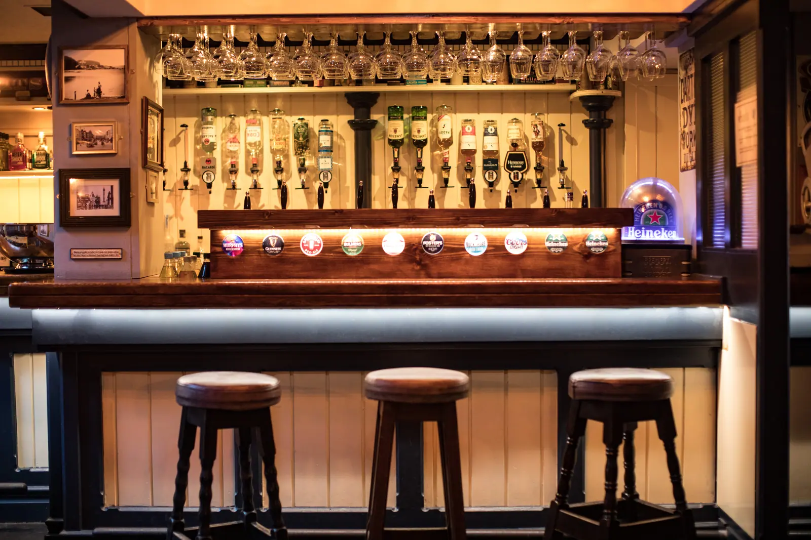
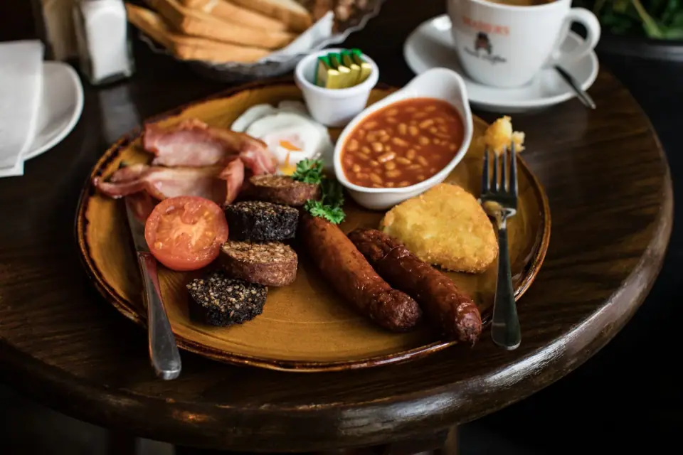
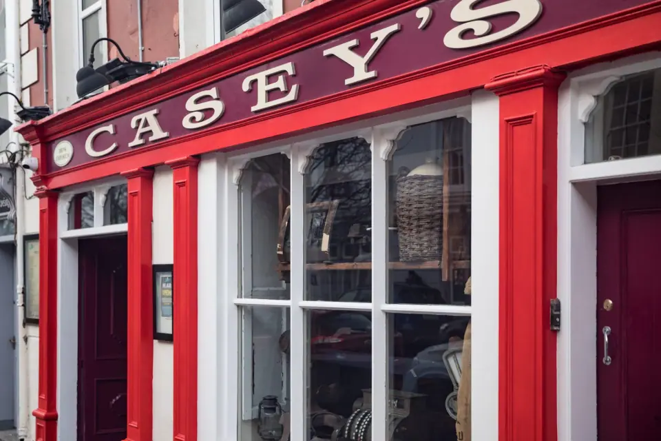

Irish pub & restaurant · Clonakilty, Co. Cork
Always a warm welcome
At Casey’s you’ll find good food, live music, frequent events, promotions and sport to lift your spirits.
- Now
- HoursMon to Thu 09:00–00:00
Fri & Sat 09:00–01:00
Sun 09:00–23:30 - Address31 Pearse St, Clonakilty, Co. Cork, Ireland
- Phone+353238836562
The pub
A bar that always has our customers needs at heart, with 9 generations of experience.
Traditional gastro pub grub with a little twist, from an all day breakfast to a light lunch including filled wraps and salads.

Clonakilty
Find us on Pearse Street
| Monday | 09:00–00:00 |
|---|---|
| Tuesday | 09:00–00:00 |
| Wednesday | 09:00–00:00 |
| Thursday | 09:00–00:00 |
| Friday | 09:00–01:00 |
| Saturday | 09:00–01:00 |
| Sunday | 09:00–23:30 |
- Live music every Friday, Saturday, Sunday and Monday night.
- Restaurant: breakfast 9am to 12pm, a la carte menu 12pm to 9pm.
